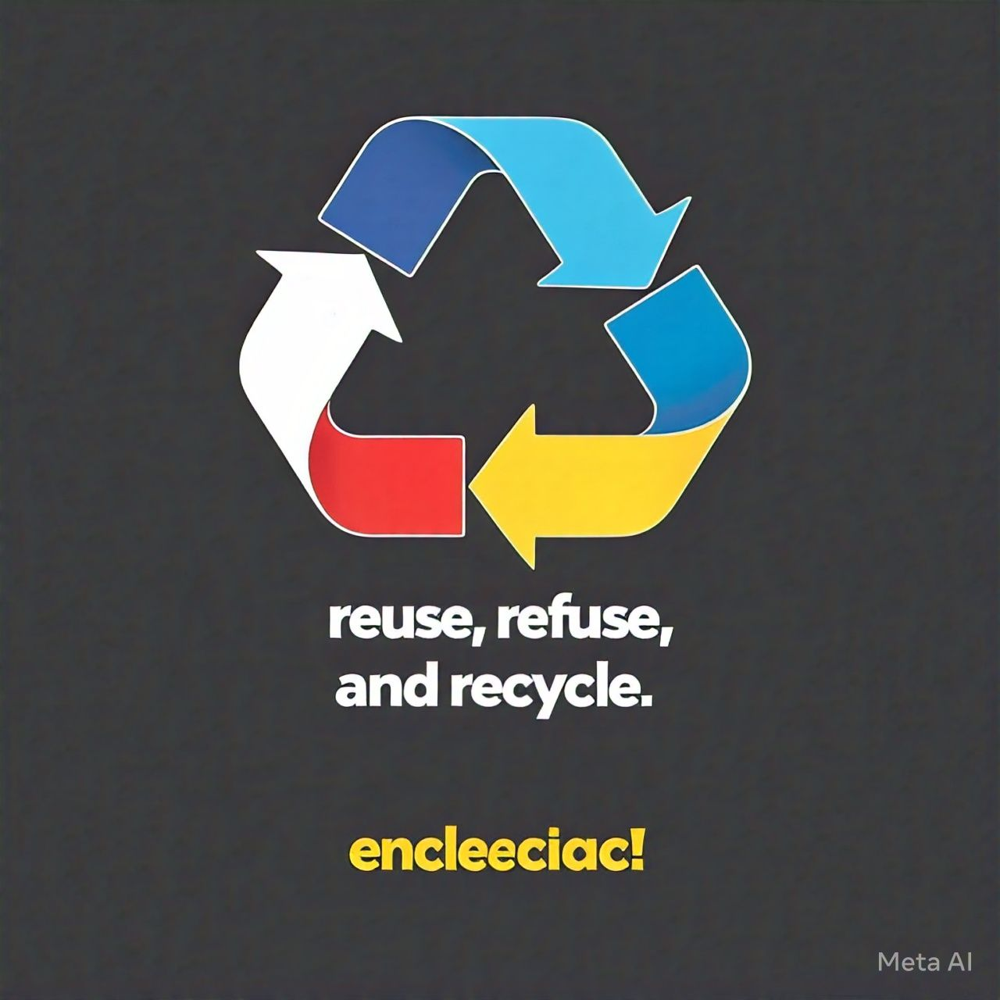
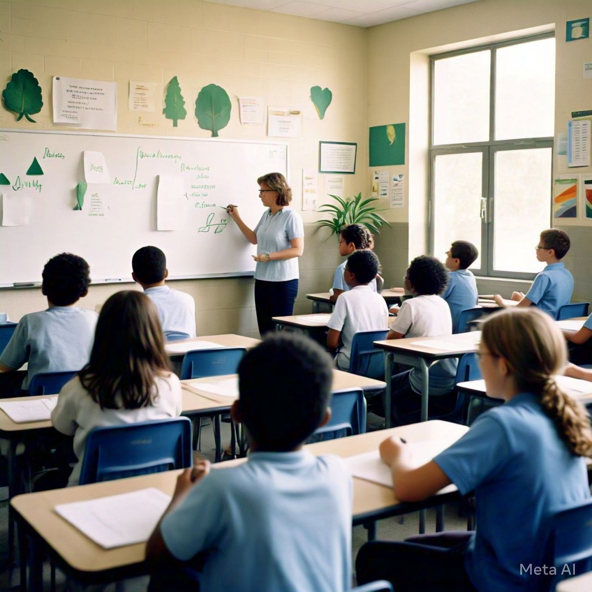
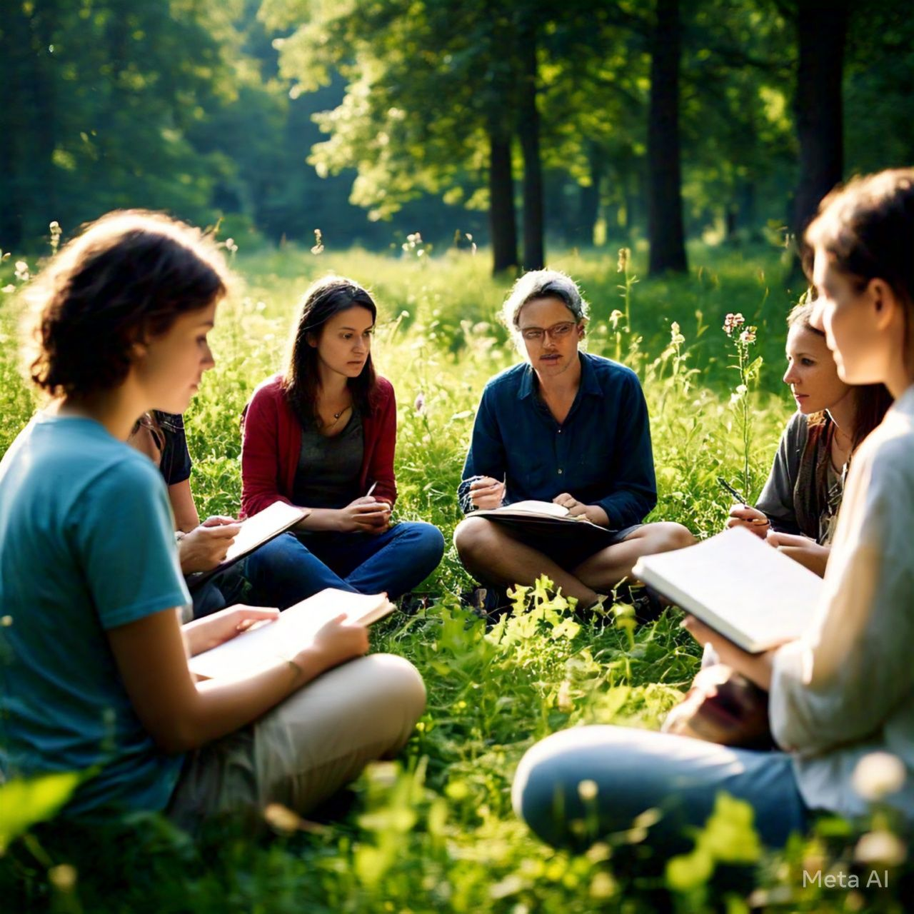

El propósito de este proyecto es concienciar a la comunidad de San Cayetano Morelos, Estado de México sobre la importancia de la gestión adecuada de la basura y promover acciones para reducir, reutilizar y reciclar los residuos en nuestra comunidad.
Objetivos específicos:
1. Investigar y analizar la situación actual de la gestión de la basura en nuestra comunidad.
2. Identificar las principales fuentes de generación de basura y los impactos ambientales y de salud pública asociados.
3. Desarrollar un plan de acción para reducir, reutilizar y reciclar los residuos en nuestra comunidad.
4. Implementar el plan de acción y monitorear sus resultados.
5. Promover la conciencia y la participación comunitaria en la gestión de la basura.

Beneficios que se logran con este proyecto
Ámbito Social
Mejora de la convivencia comunitaria, fortalecimiento de las redes sociales, promoción de la inclusión y la diversidad.
Ámbito de la Salud
Reducción de enfermedades relacionadas con la basura, mejora de la calidad del aire y del agua, promoción de hábitos saludables.
Ámbito del medio Ambiente
Reducción de la contaminación del suelo, el aire y el agua, conservación de los recursos naturales, protección de la biodiversidad
Ámbito de la Educación
Educación ambiental, desarrollo de habilidades y conocimientos, promoción de la participación ciudadana.

Metas
1. Crear un comité de limpieza y reciclaje que se reúna mensualmente para planificar y coordinar actividades.
2. Incrementar la participación en eventos de limpieza comunitaria a al menos 100 participantes por evento.
3. Establecer un sistema de recolección de residuos reciclables en al menos 20 hogares de la comunidad.